Odlewnia żeliwa i staliwa, jedyny polski producent ceramicznych filtrów piankowych, materiały ogniotrwałe Allied i oczyszczarki Pangborn. W Łodzi od 1989 roku.Odlewnia żeliwa i staliwa, filtry piankowe, materiały ogniotrwałe i oczyszczarki śrutowe. Łódź, od 1989 r.
Odlewamy pojedyncze sztuki i małe serie z żeliwa szarego i sferoidalnego oraz ze staliwa węglowego i stopowego. Zlecenie prowadzimy od modelu odlewniczego, przez odlew i obróbkę mechaniczną, po dostawę gotowego detalu.
Odlewnia ma certyfikowane laboratorium, więc do dostaw dołączamy atesty jakościowe. Nasze odlewy pracują w przesyle gazu, wodociągach i kanalizacji, przemyśle elektromaszynowym, chemicznym i w kolejnictwie.
Jesteśmy jedynym polskim producentem ceramicznych filtrów piankowych. Filtr w układzie wlewowym zatrzymuje wtrącenia niemetaliczne, żużel i zaprószenia z masy, a metal płynie do formy spokojnie i laminarnie. Efekt: mniej braków, lepszy uzysk i krótsza obróbka.
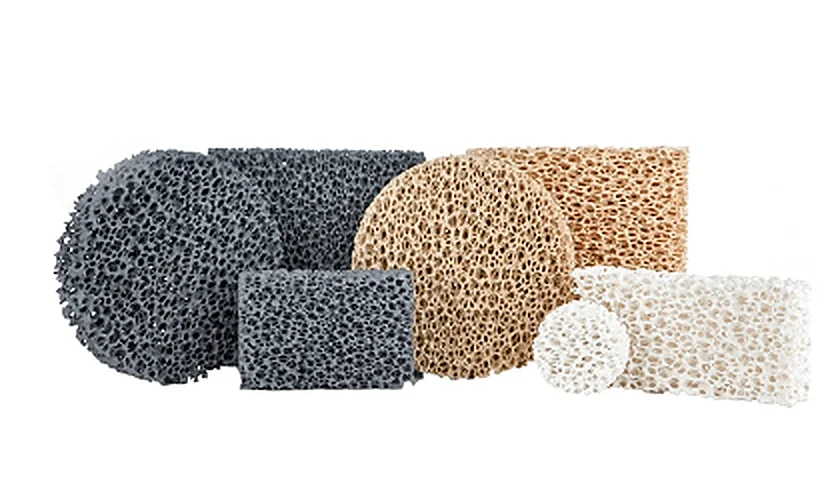
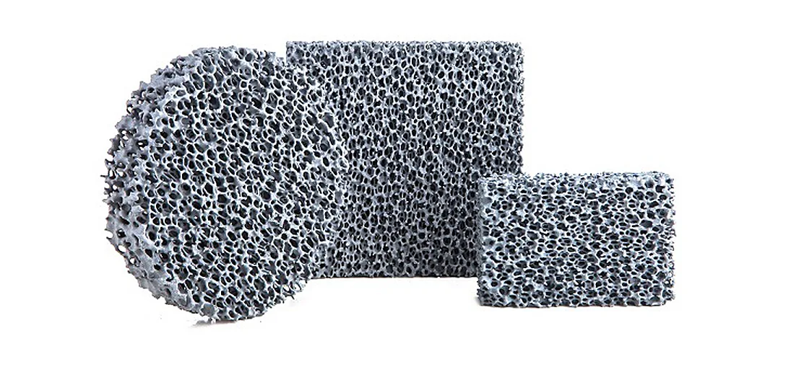
CERFERR
do żeliwa szarego, sferoidalnego i ciągliwego oraz do brązów
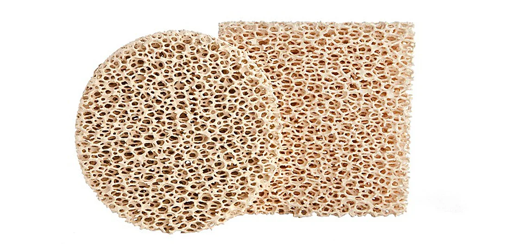
STEELFERR
do staliwa
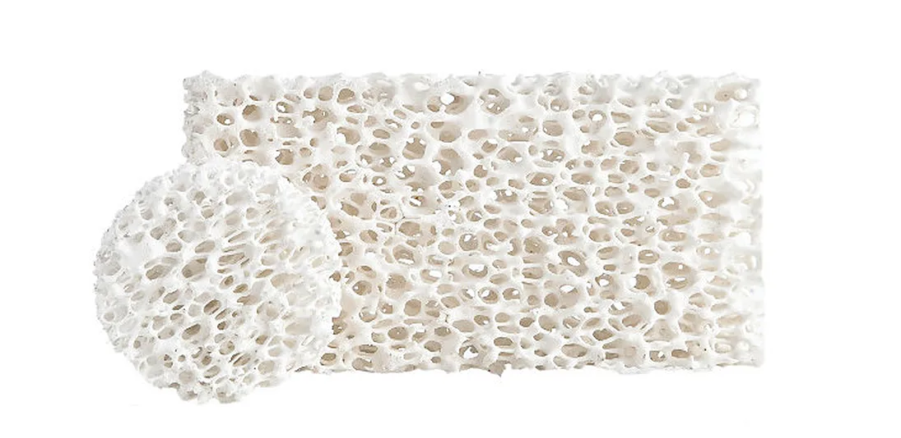
CERFERR-AL
do stopów aluminium
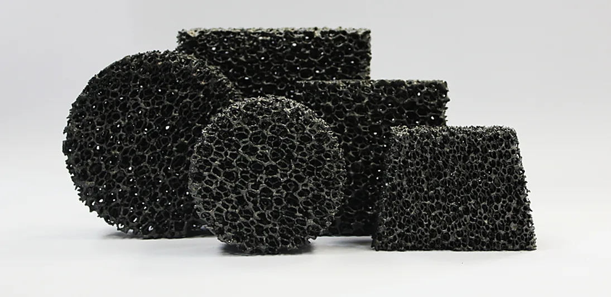
CERFERR-UC
uniwersalne, ceramiczno-węglowe, do wszystkich rodzajów stopów
Najczęściej zamawiane wymiary
Filtr prostokątny [mm]
Okrągły [mm]
Osadzenie [mm]
Szt. w pudełku
40 × 40 × 20
Ø 40 × 20
4-5
648
50 × 50 × 22
Ø 50 × 22
5
385
60 × 60 × 22
Ø 60 × 22
6
405
75 × 75 × 22
Ø 70 × 22
7-8
252
100 × 100 × 22
Ø 100 × 22
10
135
Kształty: kwadratowe, okrągłe, prostokątne i nietypowe. Porowatość: 10, 20, 30 i 40 ppi. Pakowanie filtrów (PDF)
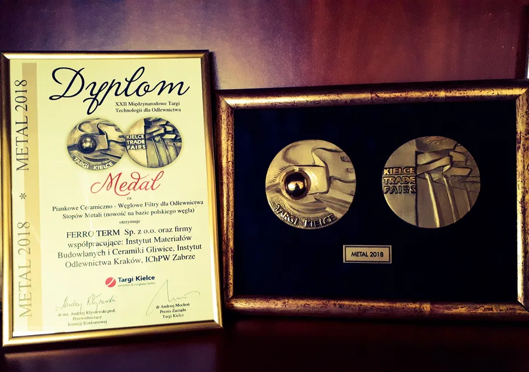
Medal Targów METAL 2018 w Kielcach za piankowe filtry ceramiczno-węglowe, opracowane razem z Instytutem Odlewnictwa w Krakowie, IMBiC w Gliwicach i IChPW w Zabrzu.
Wyłączni przedstawiciele w Polsce
Sprowadzamy sprawdzone technologie dla odlewni i obróbki metalu, a do każdej dostawy dokładamy własny serwis i doradztwo inżynierów.
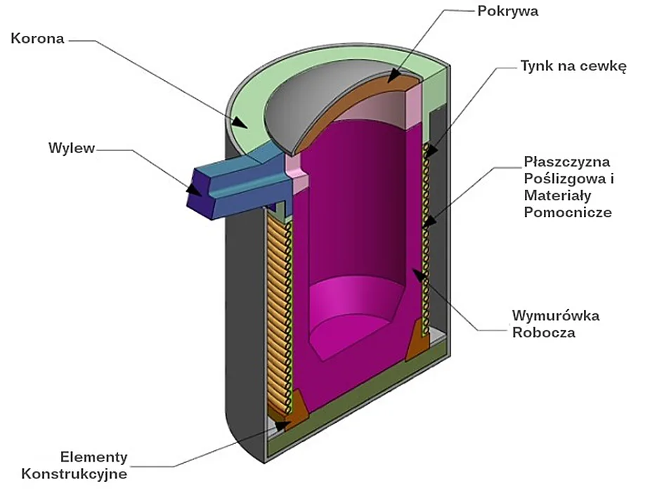
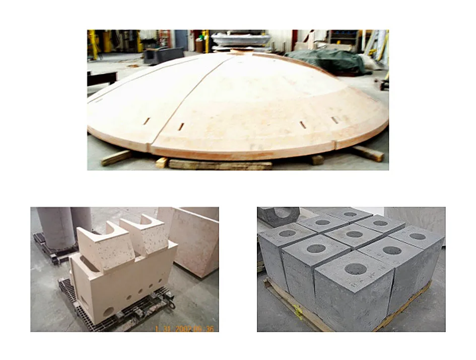
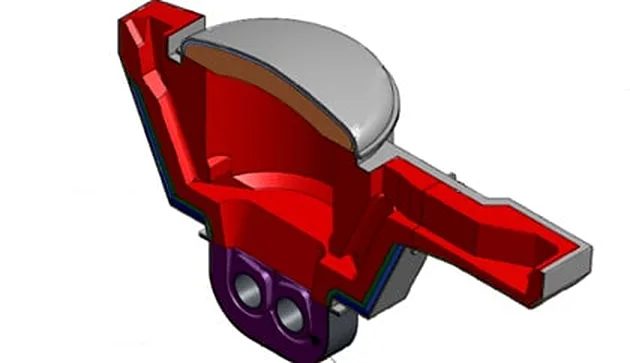
1 / 3
Materiały ogniotrwałe Allied Mineral Products (USA)
Masy i wyłożenia do indukcyjnych pieców tyglowych i kanałowych, zalewarek i kadzi, posadzki ogniotrwałe Tuffloor oraz materiały naprawcze. Dla odlewni żeliwa, staliwa, miedzi, aluminium i cynku.
Prowadzimy temat od projektu wymurówki po nadzór nad instalacją i serwis. Na czas instalacji wypożyczamy sprzęt: mieszarki, wibratory i elektryczny system wibracyjny EVS.
Maszyny Berger, Pangborn Europe, Pangborn SES i Vogel & Schemmann: zawieszkowe, taśmowe, przelotowe rolkowe, wózkowe (także z obrotnicą dla detali do 75 t) i stołowe.
Pomagamy dobrać oczyszczarkę do detalu i wydajności, serwisujemy ją i dostarczamy oryginalne części zamienne.
Na końcu drogi metalu: przenośniki, które wytrzymują gorące detale, i obróbka skrawaniem odlewów.
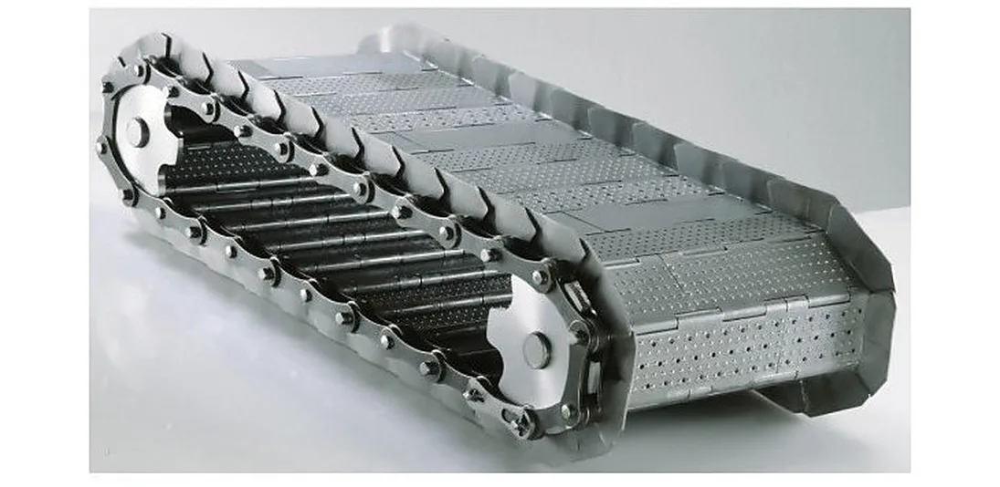
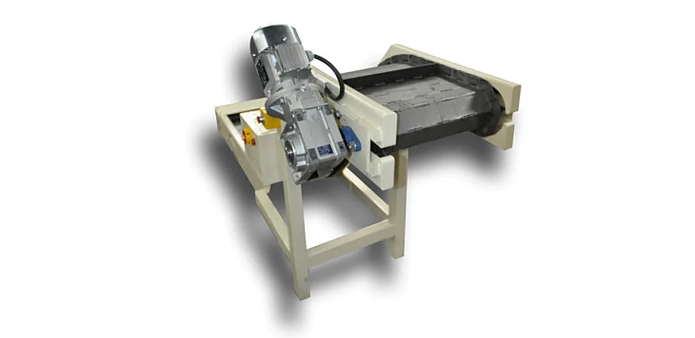
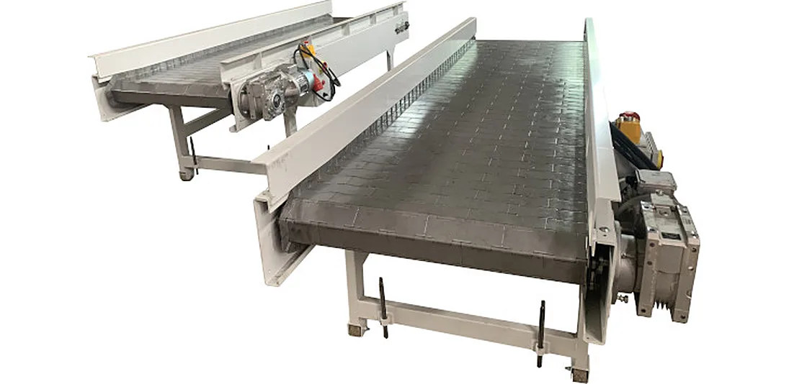
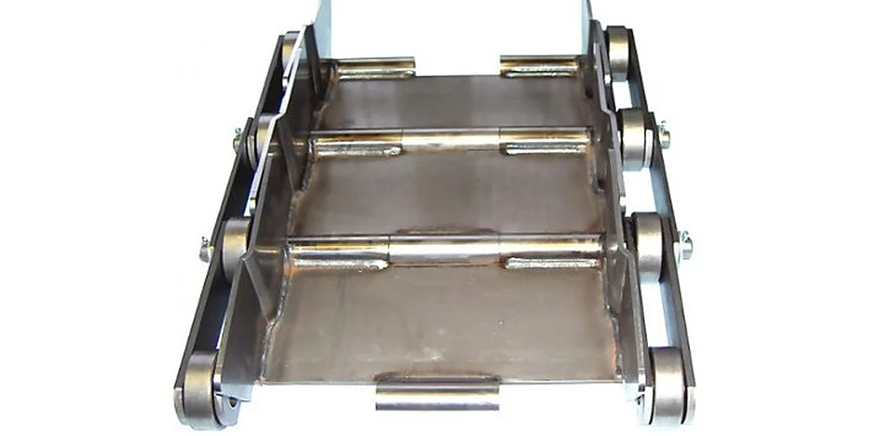
1 / 4
Stalowe taśmy zawiasowe i przenośniki
Taśmy modułowe do wyrzutników wiórów z maszyn CNC, wycinarek laserowych i odbioru gorących odkuwek i odlewów. Przenośniki poziome, typu Z i typu L w wymiarach na zamówienie, prowadnice i profile ślizgowe do pracy w temperaturze do 600°C.
Toczenie, frezowanie, wiercenie i obróbka zgrubna na maszynach konwencjonalnych. Obrabiamy odlewy z naszej odlewni i materiały powierzone, więc detal może wyjechać od nas gotowy do montażu.
Firma powstała w 1989 roku w Łodzi, wydzielona ze spółki Ferro STOP działającej przy Naczelnej Organizacji Technicznej. W 2009 roku uruchomiliśmy własną odlewnię w Topoli Królewskiej koło Łęczycy.
Współpracujemy z firmami z Niemiec, Włoch, Holandii i USA i przenosimy na polski rynek nowe technologie materiałowe. Prowadzimy też prace badawczo-rozwojowe, m.in. projekt FILTRAL nad niezatapialnymi filtrami do stopów aluminium, współfinansowany ze środków UE.